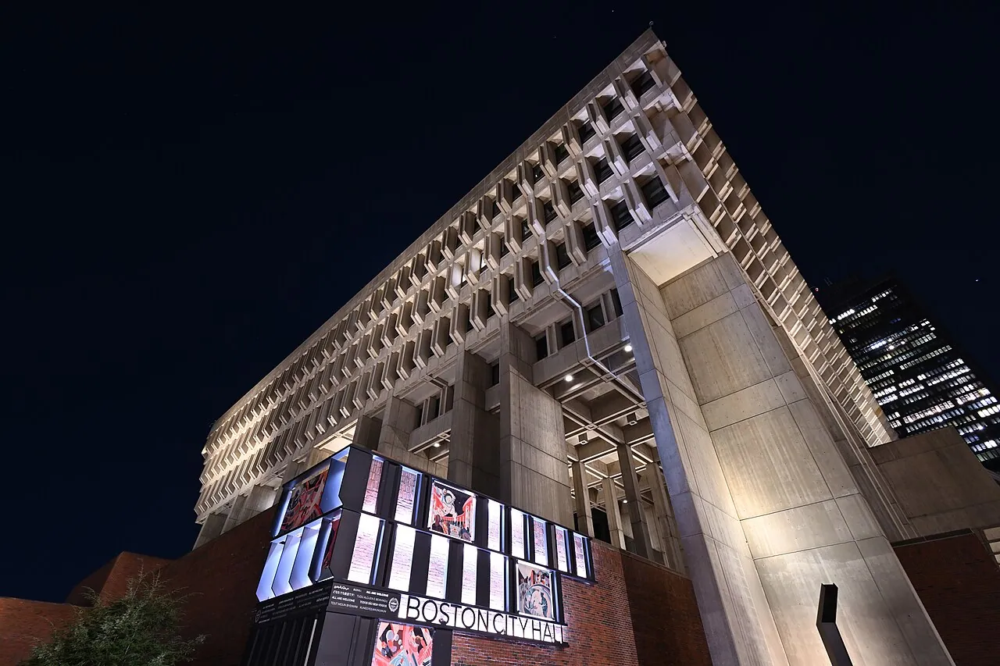
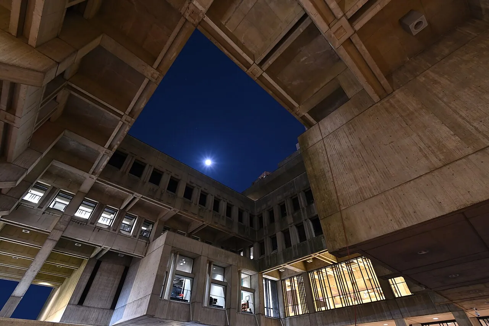
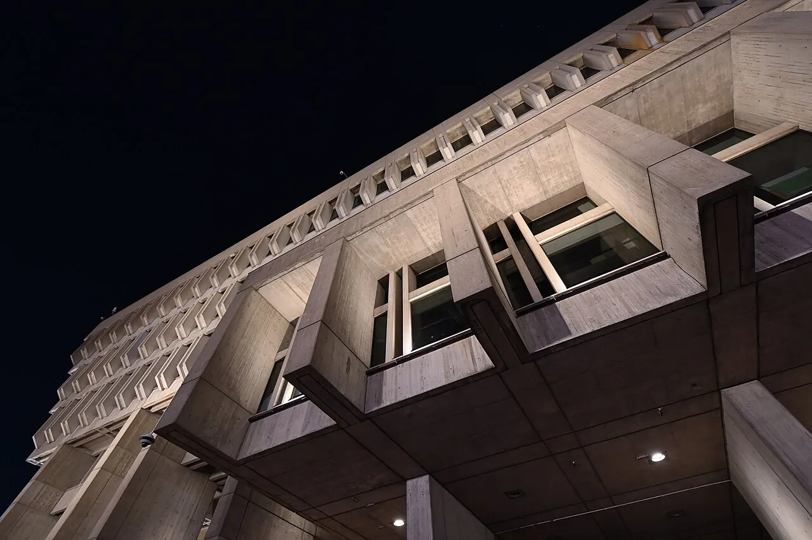
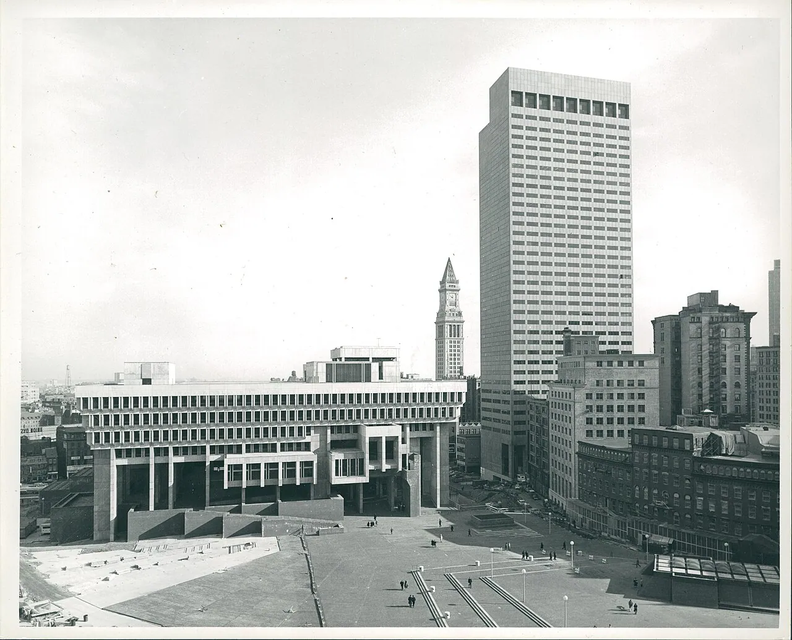

1/8 · ExteriorPhoto: 4300streetcar · CC BY 4.0 · source2/8 · ExteriorPhoto: Daniel Schwen · CC BY-SA 4.0 · source

3/8 · Exterior · The north side of Boston City Hall at nightPhoto: 4300streetcar · CC BY 4.0 · source

4/8 · Interior · The courtyard at Boston City Hall at night, with the moon visiblePhoto: 4300streetcar · CC BY 4.0 · source

5/8 · Detail · Boston City Hall at night, looking up at the west sidePhoto: 4300streetcar · CC BY 4.0 · source6/8 · Detail · Detail on the southwest corner of Boston City HallPhoto: 4300streetcar · CC BY 4.0 · source7/8 · Context · View from One Beacon Street of Boston City HallPhoto: NewtonCourt · CC BY-SA 4.0 · source

8/8 · ContextPhoto: City of Boston · CC BY 2.0 · source